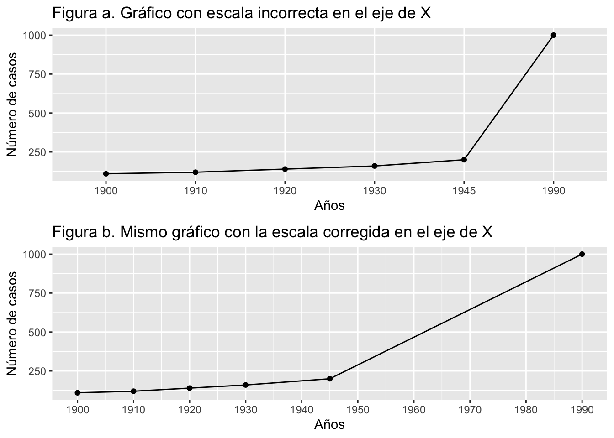
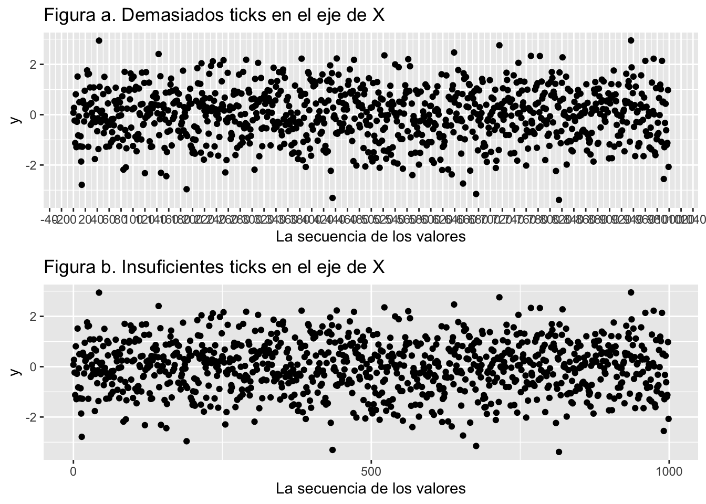
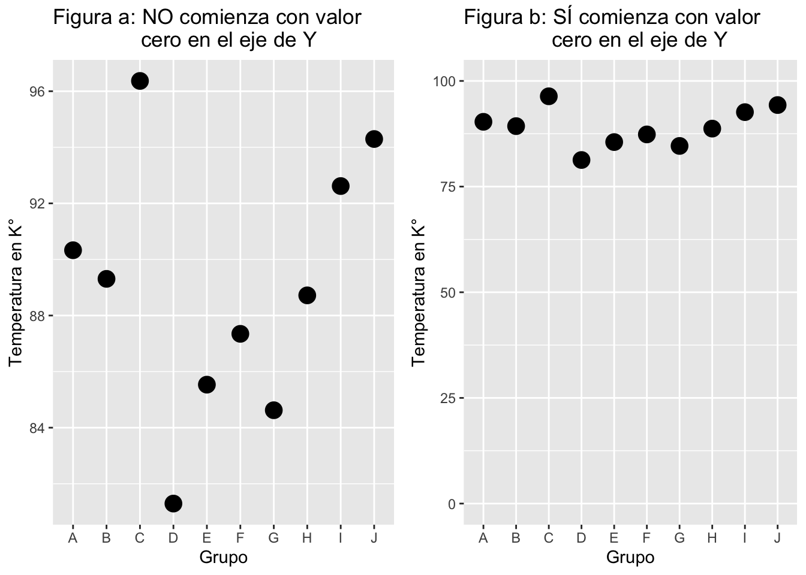

Fecha de la ultima revisión
## [1] "2020-09-04"Uno de los errores más comunes cuando se producen gráficos es dedicar demasiado tiempo a la decoración para dar una impresión grandiosa en vez de concentrarse en diseñarlos para comunicar efectivamente el mensaje a la audiencia. Por ejemplo, el uso de múltiples dimensiones, una definición confusa de las escalas en los ejes, una cantidad exagerada o insuficiente de “ticks” en los ejes, o el utilizar valores inadecuados en las escalas. Ejemplos de esos errores típicos se presentan a continuación.
Un ejemplo de embellecimiento innecesario en un gráfico es el uso de tres dimensiones en una representación 3D para comunicar el conteo de una medida. Frecuentemente lo vemos en muchos sitios de la Internet, en artículos científicos, revistas y periódicos y trabajos de estudiantes. En el caso de un conteo (y en muchos otros casos), NO hay razón para añadir otra dimensión en el gráfico pues eso no ayuda a entender los datos y hasta podría causar dificultad para percibir rápidamente los valores reales que representan las barras. Infortunadamente, la facilidad de crear gráficos en 3D con cualquier tipo de valores, por ejemplo, en MS-Excel, ha amplificado el mal uso de este tipo de representación de datos.
En la Figura: Gráfico con dimensiones innecesarias demostramos que la tercera dimensión (3D) no aporta al entendimiento de los resultados. Vemos que el valor de las barras en el eje de “y” que representa la magnitud de ese valor en la barra en 3D se muestra en el frente o detrás de la caja 3D. Añadir 3D en este caso es complicar la apreciación de esos valores.
Figura: Gráfico con dimensiones innecesarias
Muchas veces la variable en “x” tiene intervalos que no corresponden a la escala de la variable. En el gráfico en la Figura a. Gráfico con escala incorrecta en el eje de X se muestra una línea que representa la cantidad de casos de una enfermedad. El eje de “X” representa el año de recolección de los datos. Note que la escala no es consistente. Primero comienza el intervalo de 10 en 10, luego pasa a un intervalo de 15 y luego termina con un intervalo de 45. Eso afecta el comportamiento de la línea en cuanto la rapidez de la progresión de casos.
Por otro lado, veamos que el gráfico en la Figura b. Mismo gráfico con la escala corregida en el eje de X resuelve el problema al dejar que la escala se ajuste al intervalo correcto de años. Podemos notar que ahora los mismos datos quedan representados en la línea de forma más a tono con el comportamiento real de los datos.

La cantidad de “ticks” en los ejes de “X” o “Y” es frecuentemente un problema porque o hay demasiada o no hay suficiente información para visualizar la escala. Vemos aquí dos ejemplos de esos problemas. En el gráfico Figura a: Demasiados “ticks” en el eje de “X” no se puede leer con facilidad la secuencia de los datos en la variable “x”. En el segundo gráfico, Figura b. Insuficientes “ticks” en el eje de “X”, no se enseña suficiente información. La escala y los valores que se desean representar deberían ser fáciles de entender y que claramente reflejen las ideas que el científico u otro profesional desea comunicar.

En muchas ocasiones, el no incluir una escala adecuada en la variable dependiente (“y”) resulta en resultados muy difíciles de interpretar. A continuación podremos observar dos gráficos que ilustran tal condición. En el primero, Figura a: NO comienza con valor cero en eje de Y , da la impresión que hay diferencias entre los grupos (por ejemplo el grupo “D” tiene valores más pequeños por estar mucho más abajo en la escala del eje de “Y”). Pero cuando se cambia de escala de manera que incluya al cero, ver Figura b: SÍ comienza con valor cero en eje de Y , a pesar de estar representados los mismos datos, no se aprecia esa diferencia tan marcada. El único componente que se cambió fue la escala, pero aún se utilizaron los mismos datos.
En general, ¿cúal debe ser la escala correcta? ¿Se debe siempre comenzar con el cero? Depende de los tipos de valores y el mensaje que el investigador quiere transmitir. Por ejemplo, si en realidad NUNCA es posible (o improbable) que los valores en “y” lleguen al valor cero, no sería correcto mostrar la escala comenzando con el cero. Un ejemplo exagerado sería que si se mide la temperatura en la escala de Kelvin y Ud representa en un gráfico la temperatura típica de un lugar, por ejemplo, si el grupo “D” representa la temperatura en la ciudad de Madrid, no sería lógico mostrar en el eje de “y” temperaturas que comiencen con 0° Kelvin ya que la temperatura de esa ciudad no puede llegar a esa medida. Al contrario, lo lógico sería tener una escala que represente los valores mínimo y máximo típicos en el período del estudio.

Hasta ahora hemos visto errores de representación al producir gráficos. El mismo problema de representación visual frecuentemente se da al presentar datos en forma tabular. A continuación se muestran algunos errores comunes cuando se presentan datos en tablas.
No se deben incluir valores significativos excesivamente.
No se deben incluir diferentes formatos en la misma columna.
Es importante que los valores numéricos estén justificados a la derecha. Recordemos que nuestra apreciación de las diferencias numéricas van de derecha a izquierda. Por ejemplo, el valor 112 se aprecia automáticamente como más grande que un valor que tiene dos dígitos (digamos el 12).
No se mencionan las unidades de los valores.
Ahora veamos un ejemplo de esos problemas.
A ver, mire la Tabla a y la Tabla b. ¿Encuentra los errores? Vea que la Tabla a muestra los valores con demasiadas cifras significativas, justificaciones ilógicas, formato inconsistente y no especifica las unidades de los valores. Vemos en la Tabla b que ahora las cifras significativas aparecen de forma consistente y en el mismo formato (2da y 3ra columnas), todos los números están justificados a la derecha y las unidades de cm se especifican (3ra columna).
En conclusión, no solo la Tabla b se ve más presentable, si no que también corrige los problemas, de ahí la importancia de presentar datos tabulados de forma que facilite su comunicación a la audiencia.
Tabla a. Errores de formato, justificación y escala
| Tamaño de muestra | El largo de la hoja | valor de p | |
|---|---|---|---|
| Mujeres | 27273 | 11.03 | 0.000000001 |
| Hombres | 169019 | 13.5 | 0.098979676 |
| Especie | 1.087^6 | 14.5 | .0300001 |
Tabla b. Errores anteriores corregidos
| Tamaño de muestra | El largo de la hoja (cm) | valor de p | |
|---|---|---|---|
| Mujeres | 27273 | 11.0 | <0.001 |
| Hombres | 169019 | 13.5 | 0.099 |
| Especie | 1087669 | 14.5 | 0.030 |